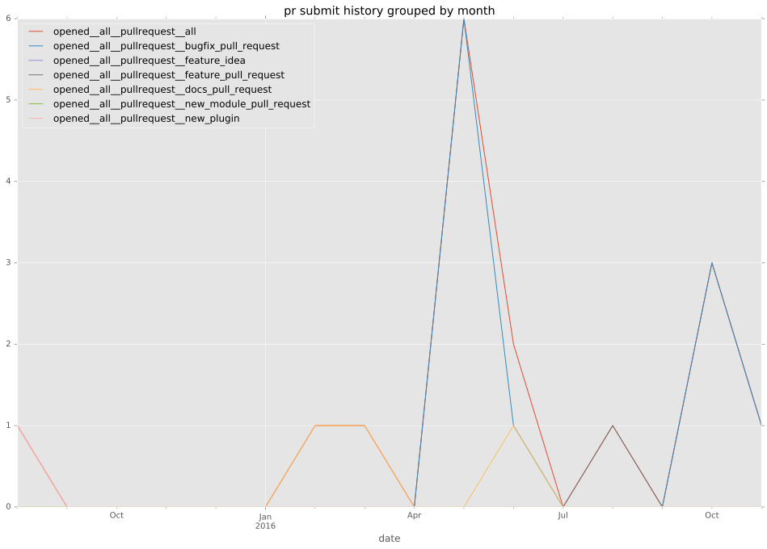
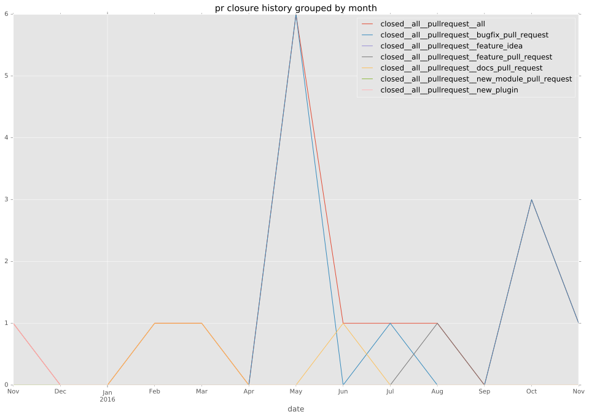
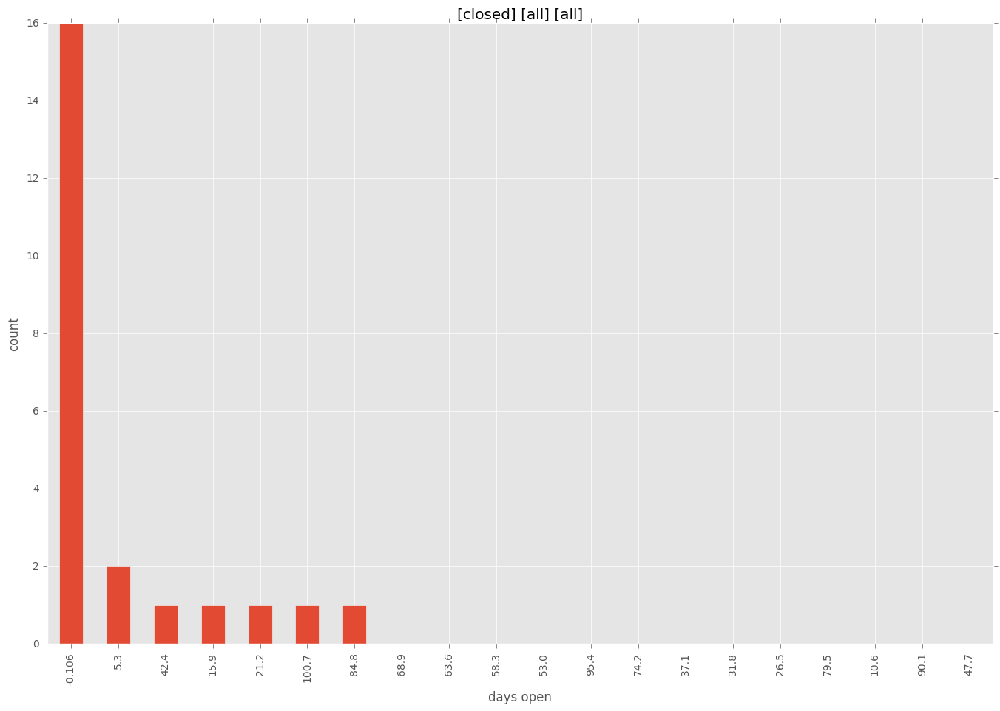
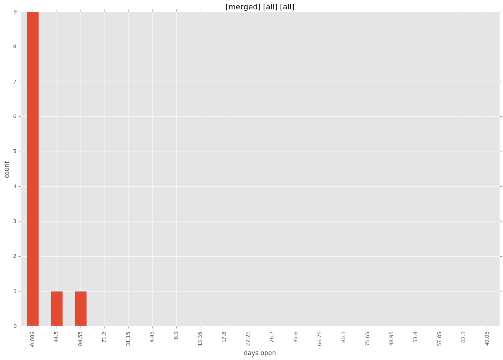
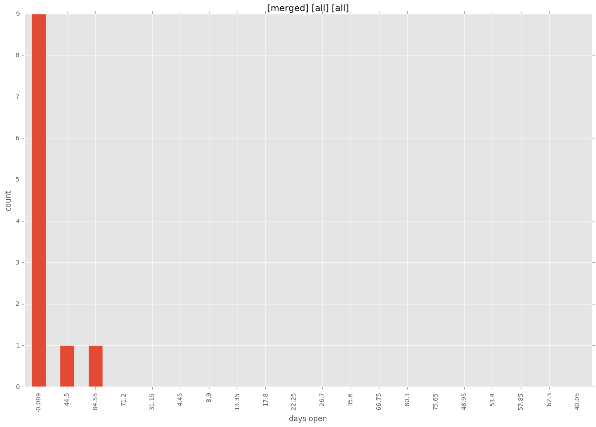

authors
- yaegashi
maintainers
contributors
- tazle : 2 commits
- h0nIg : 2 commits
- abadger : 3 commits
- ypid : 1 commits
- mscherer : 3 commits
- bcoca : 5 commits
- yaegashi : 15 commits
- dougluce : 1 commits
- rev112 : 4 commits
total issue counts
feature pull request: 1
docs report: 3
pullrequest: 15
docs pull request: 3
bugfix pull request: 10
issue: 14
new plugin: 1
bug report: 11
issue history
pullrequest history


days open by issue type
bugfix pull request
count: 15
std: 16.1858256626
min: 0
max: 46
median: 0.0
mean: 6.13333333333
all
count: 34
std: 28.453436334
min: 0
max: 106
median: 0.0
mean: 12.9117647059
pullrequest
count: 0
std: nan
min: nan
max: nan
median: nan
mean: nan
docs pull request
count: 6
std: 0.0
min: 0
max: 0
median: 0.0
mean: 0.0
docs report
count: 3
std: 10.0166528009
min: 2
max: 21
median: 6.0
mean: 9.66666666667
feature pull request
count: 2
std: 0.0
min: 0
max: 0
median: 0.0
mean: 0.0
issue
count: 0
std: nan
min: nan
max: nan
median: nan
mean: nan
new plugin
count: 2
std: 0.0
min: 89
max: 89
median: 89.0
mean: 89.0
bug report
count: 6
std: 41.3843770844
min: 0
max: 106
median: 5.5
mean: 23.3333333333
closures grouped by total days open


 
